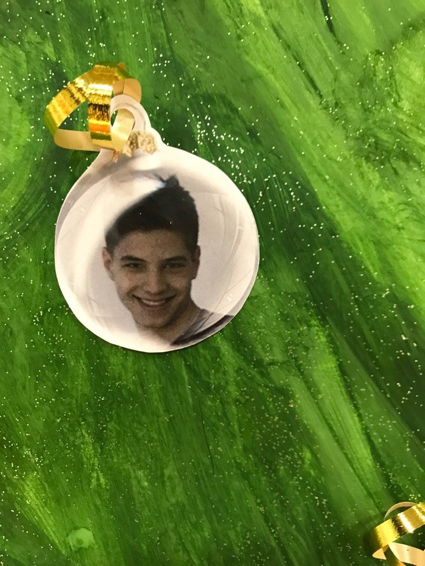

"Можно обеспечить защиту от дурака, но только от неизобретательного."—Закон Кейсера
"Можно обеспечить защиту от дурака, но только от неизобретательного."—Закон Кейсера

Джош и Рене переезжают со своими детьми в новый дом, но не успевают толком распаковать вещи, как начинаются странные события. Необъяснимо перемещаются предметы, в детской звучат странные звуки… Но в настоящий ужас приходят родители, когда их десятилетний сын Далтон впадает в кому. Все усилия врачей в больнице помочь мальчику безуспешны.
США после Гражданской войны. Легендарный охотник за головами Джон Рут по кличке Вешатель конвоирует заключенную. По пути к ним прибиваются еще несколько путешественников. Снежная буря вынуждает компанию искать укрытие в лавке на отшибе, где уже расположилось весьма пестрое общество: генерал конфедератов, мексиканец, ковбой… И один из них - не тот, за кого себя выдает
В центре сюжета - школьник по имени Морти и его дедушка Рик. Морти - самый обычный мальчик, который ничем не отличается от своих сверстников. А вот его дедуля занимается необычными научными исследованиями и зачастую полностью неадекватен. Он может в любое время дня и ночи схватить внука и отправиться вместе с ним в межпространственные приключения с помощью построенной из разного хлама летающей тарелки.
1987 год. Джордан Белфорт становится брокером в успешном инвестиционном банке. Вскоре банк закрывается после внезапного обвала индекса Доу-Джонса. По совету жены Терезы Джордан устраивается в небольшое заведение, занимающееся мелкими акциями. Его настойчивый стиль общения с клиентами и врождённая харизма быстро даёт свои плоды. Он знакомится с соседом по дому Донни.
Кобб – талантливый вор, лучший из лучших в опасном искусстве извлечения: он крадет ценные секреты из глубин подсознания во время сна, когда человеческий разум наиболее уязвим. Редкие способности Кобба сделали его ценным игроком в привычном к предательству мире промышленного шпионажа, но они же превратили его в извечного беглеца и лишили всего, что он когда-либо любил.